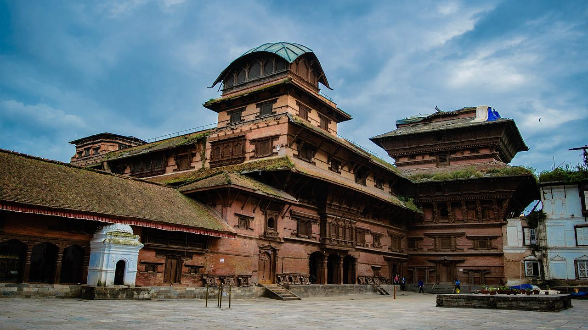

Kathmandu Valley

This complex of palaces, courtyards, and temples were built in the 12th to 18th centuries used to be the seat of the ancient Malla kings of Kathmandu. An intriguing piece here is the 17th century stone inscription set in to the wall of the palace with writing in 15 languages. Durbar Square is the social, religious and urban focal point of the city. There are three museums inside the palace building.
Kathmandu Durbar Square
It is easy to be over whelmed by the seemingly uncountable monuments in the Kathmandu Durbar Square. The house of the Living Goddess, the ferocious Kal Bhairab, the red monkey god, and hundreds of erotic carvings are a few examples of the sights at the Square! The buildings here are the greatest achievements of the Malla dynasty, and they resulted from the great rivalry between the three palaces of Kathmandu, Patan, and Bhaktapur. The Valley was divided among the children of Yaksya Malla. For visitors today, and for the Nepalese, it was serendipitous that they, and later their offsprings, began an artistic warfare trying to outdo each other in splendid constructions. Kings copied everything their neighbours built in an even grander style. A visitor who wanders around the Square will see a round temple in the pagoda architectural style, the temple of Goddess Taleju (who played dice with King Jaya Prakash Malla), and an image of Shiva and Parbati sitting together among the many monuments. The Square is teeming with colorful life. Vendors sell vegetables, curios, flutes, and other crafts around the Kastamandap rest house. This rest house is said to have been built with the wood of a single tree and is the source from which the Kathmandu Valley got its name. Nearby are great drums which were beaten to announce royal decrees. All woodcarvings, statues, and architecture in this area are exceptionally fine, and Kathmandu Durbar Square is among the most important sights for travellers to see.
SwayambhuNath
The history of the Valley, according to the legends, begins with Swayambhu, or the “the self existent”. In times uncharted by history, Bodhisattva Manjusri came across a beautiful lake during his travel. He saw a lotus that emitted brilliant light at the lake’s center, so he cut a gorge in a southern hill and drained the waters to worship the lotus. Men settled on the bed of the lake and called it the Kathmandu Valley. From then on, the hilltop of the Self existent Lord has been a holy place.
Swayambhu’s light was covered in time because few could bear its intensity. By the thirteenth century, after many layers were added to the original structure that enveloped the Lord’s power, a dome like shape had been acquired. The stupas central mast was damaged and replaced at that time. Peripheral sources of power were discovered on the hilltop as well and stupas, temples, and rest houses were built to honour them. Images of important deities, both Buddhist and Hindu, were also installed. Today, age-old statues and shrines dot the stupa complex. Behind the hilltop is a temple dedicated to Manjusri of Saraswati – the goddess of learning.
Swayambhu is, perhaps, the best place to observe the religious harmony in Nepal. The stupa is among the most ancient in this part of the world, and its worshippers are diverse from Newar nuns, Tibetan monks, and Brahmin priests to lay Buddhists and Hindus. The largest image of the Sakyamuni Buddha in Nepal is in a monastery next to the stupa. Other monasteries here have huge prayer wheels, fine Buddhist paintings, and special butter lamps which may be lit after presenting monetary offerings. Swayambhu is a major landmark of the Valley and looks like a beacon below the Nagarjun hill. It provides an excellent view of the Kathmandu Valley. Devotees have climbed the steps on the eastern side for centuries. Statues of the Buddha, mini stupas, monasteries and monkeys make the climb to Swayambhu ?which is fairly steep worthwhile. But for someone who is physically disabled or is pressed for time, the western road allows you to get off your transport almost at the base of the stupa.
BoudhaNath
Boudhanath is among the largest stupas in South Asia, and it has become the focal point of Tibetan Buddhism in Nepal. The white mound looms thirty-six meters overhead. The stupa is located on the ancient trade route to Tibet, and Tibetan merchants rested and offered prayers here for many centuries. When refugees entered Nepal from Tibet in the 1950s, many of them decided to live around Bouddhanath. They established many gompas, and the “Little Tibet” of Nepal was born. This “Little Tibet” is still the best place in the Valley to observe Tibetan lifestyle. Monks walk about in maroon robes. Tibetans walk with prayer wheels in their hands, and the rituals of prostration are presented to the Buddha as worshippers circumambulate the stupa on their hands and knees, bowing down to their lord. Many people believe that Bouddhanathwas constructed in the fifth century, but definite proof is lacking. The stupa is said to entomb the remains of a Kasyap sage who is venerable both to Buddhists and Hindus. One legend has it that a woman requested a Valley king for the donation of ground required to build a stupa. She said she needed land covered by one buffalo’s skin and her wish was granted by the King. She cut a buffalo skin into thin strips and circled off a fairly large clearing. The king had no choice but to give her the land.
PashupatiNath
Pashupatinath is the holiest Hindu pilgrimage destination in Nepal. There are linga images of Shiva along with statues, shrines, and temples dedicated to other deities in the complex. A temple dedicated to Shiva existed at this site in AD 879. However, the present temple was built by King Bhupatindra Malla in 1697. A gold-plated roof, silver doors, and woodcarvings of the finest quality decorate the pagoda construction. Guheswari Temple, restored in AD 1653, represents the female “force”. It is dedicatedto Satidevi, Shiva’s first wife, who gave up her life in the flames of her father’s fire ritual.
A circuit of the Pashupati area takes visitors past a sixth century statue of the Buddha, an eighth-century statue of Brahma the creator and numerous other temples. Some other places to visit are Rajrajeswari Temple, built in 1407, Kailas with lingas more than 1,400 years old, Gorakhnath temple, and the courtyard of Biswarup. There are rows of Shiva shrines and Hindu pilgrims from all over South Asia offering puja worship to Shiva, tile Lord of Destruction.
The Bagmati River flows close by and the Arya Ghat cremation grounds are here. We strongly advise photographers not to take photos of cremations and of bereaved families. Sadhus, sages who follow the lifestyle of Shiva, may be seen covered in ashes and lion cloths. They ask for money in case you want to take their photos. The main Pashupatinath courtyard may be entered by those of Hindu faith only.
IndraChowk
Indrachowk, a square, the courtyard of Indra named after an ancient Hindu deityis walking distance far from Durbar square. Akash Bhairab temple, a three storey temple lies at Indrachowk the main market avenue of the Kathmandu city. The image of AkashBhairavis displayed outside the temple for a week during Indrajatra, the festival of Indra the God of Rain.
Freak Street
The road running off Durbar square to the south, has since 1973 rejoiced in the unofficial title of Freak street. It used to be wild jumble of cheap hotels, restaurant, and all the freaky travellers.
White MachhendraNath
The temple is situated at Machhendra Bahal near Indrachowk. This two storeyed temple was built by Yaksha Malla in 1500 AD The chariot festival of white MachendraNath (the god of mercy) is annually celebrated in Kathmandu Valley. The traditional music is always played in the evening at this temple which is open to westerners.
Ason
Ason is one of the busiest squares in Kathmandu and has six roads radiating from it. The three storeyed high pagoda styled Annapurna temple (goddess of food grains) is situated at Ason. Another two storeyed temple is dedicated to Lord Ganesh.
Thamel
Thamel area has recently emerged as the most popular tourist area of Kathmandu. Thamel is 15 to 20 minutes walk from the center of Kathmandu. It is amazing to see how this area has become the centre for budget travellers in recent years. Thamel is clean narrow street full of mushrooming lodges, hotels for budget travellers, restaurant, bar, tourists oriented shops and bustling with activities.
Singa Durbar
Singha Durbar is a grand, imposing palace built in the neo-classical style. It was once the private residence of Rana Prime Ministers and is now the official seat of government. It used to be a huge building with many courtyards; however, most of it was destroyed by fire and only the western half has been rebuilt.
Dharahara
Also known as BhimsenStambha (Tower), Dharahara is a 50.5 meter tower built by Prime Minister BhimsenThapa in 1832. Situated near the General Post Office, the tower is one of Kathmandu’s best known monuments. From the top of the tower, one has a panoramic view of the whole Kathmandu Valley. It is not open for the public
Narayanhiti Palace Museum
Narayanhiti Palace Museum is the former royal palace in the centre of the Nepalese capital, Kathmandu, It is the palace which long served as a primary residence for the country’s monarchs. Narayanhiti, in Narayanhiti Palace, is made up of two words ‘narayan’ and ‘hiti’. ‘Naryan’ is a form of Hindu god “Lord Vishnu” whose temple is located opposite to the palace and ‘hiti’ means “water spout” which is also located to the east of main entrance in the precincts of the palace, and which has a legend associated with it. The entire enclosure surrounded by a compound wall, located in the north-central part of Kathmandu, is called the Narayanhiti palace. It was a new palace, in front of the old palace of 1915 vintage, built in 1970 in the form of a contemporary Pagoda. It was built on the occasion of the marriage of King BirendaBir Bikram Shah, the then heir apparent to the throne.
Bhaktapur
Bhaktapur or Bhadgaon as the city is also known, is a museum of medieval art and architecture with many fine examples of sculpture, woodcarving and colossal pagoda temples consecrated to different gods and goddesses. The city is shaped like a conch shell-one of the emblems of the god Vishnu and was founded by King Ananda Deva in A.D. 889. The city is 1,402 metres above sea level. Pottery and weaving are its major traditional industries, The city lies fifteen kilometres to the east of Kathmandu.
Bhaktapur Durbar Square
Bhaktapur Durbar Square is a conglomeration of pagoda and shikhara style temples grouped around a fifty-five window palace of brick and wood. The square is one of the most charming architectural showpieces of the Valley as it highlights the ancient arts of Nepal. The golden effigies of kings perched on the top of stone monoliths, the guardian deities looking out from their sanctuaries, the wood carvings in every place struts, lintels, uprights, tympanums, gateways and windows all seem to form a well-orchestrated symphony. The main items of interest in the Durbar Square are:
The Lion Gate : Dating as far back as A.D. 1696, this gate is guarded on either side by two huge statues of lions. Alongside, there are two stone images of Bhairav (the dreadful aspect of Shiva) and Ugrachandi (the consort of Shiva in her fearful manifestation).
The Golden Gate : The Golden Gate is said to be the most beautiful and richly moulded specimen of its kind in the entire world. The door is surmounted by a figure of the goddess Kali and Garuda (the mythical man?bird) and attended by two heavenly nymphs. It is also embellished with mythical creatures of marvellous intricacy, In the words of Percy Brown, an eminent English art critic and historian, the Golden Gate is the most lovely piece of art in the whole Kingdom: it is placed like a jewel, flashing innumerable facets in the handsome setting of its surroundings. The gate was erected by King Ranjit Malla and is the entrance of the main courtyard of the Palace of Fifty five Windows.
The Palace of Fifty five Windows :This magnificent palace was built during the reign of King Yakshya Malla in A.D. 1427 and was subsequently remodelled by King Bhupatindra Malla in the seventeenth century. Among the brick walls with their gracious setting and sculptural design, is a balcony with Fifty five Windows, considered to be a unique masterpiece of woodcarving.
The Art Gallery :The Art Gallery contains ancient paintings belonging to the Hindu and Buddhist traditions of various periods and descriptions. This gallery is open everyday except Tuesday.
The Statue of King BhupatindraMalla :This statue showing King Bhupatindra Malla in the act of worship is set on a column facing the palace. Of the square’s many statues, this is considered to be the most magnificent.
Siddha Pokhari
This is a big rectangular water pond located near the main city gate. It was built during the reign of King Yakshya Malla in the early fifteenth century and is associated with a number of myths, From this spot a wide range of snowy peaks is visible on clear days.
Batsala Temple
The stone temple of Batsala Devi has many intricate carvings. It is most famous for its bronze bell, known to local residents as ‘the bell of barking dogs’ as when it is rung, all dogs in the vicinity begin barking and howling ! The colossal bell was hung by King Ranjit Malla in A. D. 1737 and was used to sound the daily curfew. It is nowadays rung every morning when the goddess Taleju is worshipped.
Pashupati Temple
This temple is a replica of the famous temple on the Bagmati river in Kathmandu and is widely noted for the erotic carvings in its struts. King Yakshya Malla built it.
Nyatapola Temple
This five-storey pagoda was built by King Bhupatindra Malla in A. D. 1702. It stands on five terraces on each of which squat a pair of figures: two famous wrestlers, two elephants, two lions, two griffins and Baghini and Singhini the tiger and the lion goddesses. Each pair of figures is considered ten times stronger than the ones immediately below, while the lowest pair, the two strong men Jaya Malla and Phatta Malla, were reputedly ten times stronger than any other men. This is one of the tallest pagoda temples in Kathmandu Valley and is famous for its massive structure and subtle workmanship
BhairavNath Temple
This is another pagoda style temple dedicated to Lord Bhairav, the dreadful aspect of Shiva. It stands a short distance away from the temple of Nyatapola and was originally constructed by King JagatJyoti Malla on a modest scale. It was later remodelled by King Bhupatindra Malla, a zealous lover of the arts, into what is now a three storey temple.
Dattatraya Temple
The temple of Dattatraya is as old as the Palace of Fifty five Windows. Consecrated by King Yakshya Malla in A. D. 1427, this temple, according to popular belief, was built out of the trunk of a single
Patan
The ancient name of Patan is Lalitpur meaning, city of beauty. It is indeed a city of beauty and grace and is planned on a circular format with Buddhist stupas at each of the four points of the compass. The city is three kilometressouth?east of Kathmandu across the river Bagmati. Like Kathmandu, its centre of attraction is its Durbar Square complex, situated right in the middle of the market place. The city is full of Buddhist monuments and Hindu temples with fine bronze gateways, guardian deities and wonderful carvings. Noted for its craftsmen and metal workers, it is also known as the city of artists. The city is believed to have been built during the reign of Vira Dev in A. D. 299.
Patan Durbar Square
This whole square is a cluster of fine pagoda temples and stone statues; it is at the same time the business hub of the city. At every step one comes across a piece of art or an image of a deity, testifying to the consummate skill of Patan’s anonymous artists. The ancient palace of the Malla kings and the stone baths associated with various legends and episodes of history are especially interesting to visitors. The stone temple of Lord Krishna and the Royal Bath (Tushahity) with its intricate stone and bronze carvings are two other masterpieces in the same vicinity.
HiranyaMahavihar
This three storey golden pagoda of Lokeshwar was built in the twelfth century A. D. by King Bhaskar Varma. Located in the courtyard of Kwabahal, this temple is in a class of its own. A golden image of Lord Buddha and a big prayer wheel can be seen on the pedestal of the upper part of the Car while intricate decorative patterns on its outer walls add charm to the mellow richness of the shrine.
Kumbheshwar
This is a five storey pagoda style temple of Lord Shiva. Inside the courtyard is a natural spring whose source, it is said. is the famous glacial lake of Gosainkunda. This temple was built by King Jayasthiti Malla while the golden finial was added later, in A. D. 1422. He also cleaned the pond near Kumbheshwar and installed various images of Narayan, Ganesh, Sitala, Basuki, Gauri, Kirtimukh and Agamadevata around the pond and in the courtyard. Ritual bathing takes place here every year on the day of JanaiPoornima.
Jagat Narayan
The Jagat Narayan temple is a tall shikhara style temple consecrated to Lord Vishnu. The temple is built of red bricks on the bank of the Bagmati at Sankhamul and enshrines many stone images. The fine metal statue of Garuda placed on a stone monolith is quite eye catching and is accompanied by similarly placed images of Ganesh and Hanuman.
Krishna Temple
The temple of Lord Krishna holds a commanding position in Patan’a Palace complex. Though its style is not wholly native, it is one of the most perfect specimens of Nepalese temple craft. The three-storey stone temple continues to elicit high praise from lovers of art and beauty. It was built by King Siddhi Narasingha Malla in the sixteenth century A. U Important scenes from the Mahabharata and Ramayana epics have been carved in bas-relief. The minute details of this relief work clearly show the high level that the art of stone carving attained in the sixteenth century.
MahaBoudha
The temple of Mahaboudha is a masterpiece of terra cotta. Like the Krishna Mandir, it reveals an artistic tradition which evolved outside of Nepal yet shows how native Nepalese craftsmen have been able to do justice to an unfamiliar art form. This temple was built by Abhaya Raj, a priest of Patan and is sometimes referred to as the temple of a million Buddhas because every single brick bears a small image of Buddha. There is an astonishing total of nine thousand bricks. It was levelled to the ground in the great earthquake of 1933 but was rebuilt exactly to the original specifications-proving the temple craft is still one of the living arts of Nepal.
Rudra Varna Mahavihar
This is one of Patan’s oldest Buddhist monasteries. Adjacent to the monastery there is a temple that contains a fine image of Lord Buddha. The courtyard of this temple is a gallery of exquisite bronze and stone art work.
Ashokan Stupas
Popularly believed, though not proven without doubt to have been built by Ashoka, the Buddhist Emperor of India, these stupas stand at four different corners of Patan, giving the whole city a monastic character. All these Buddhist mounds were built in A.D. 250 at the time when Buddhism was making headway in the Kathmandu Valley.
MachhendraNath Temple
The temple of Red Machchhendranath is another center of attraction in Patan. The temple lies in the middle of a wide, spacious quadrangle just at the outer rim of the market place. A fine clay image of Red MachchhendranathAvalokiteshwaris housed here for six months every year, after which it is taken round the city of Patan in a colourful chariot festival beginning in April-May and lasting sometimes for several months.
The Tibetan Camp
An attraction of a different kind is the Tibetan Camp on the outskirts of Patan. The small Tibetan population living ‘ here has set up a number of shrines and stupas as well as several souvenir shops offering authentic.
Tibetan handicrafts such as prayer wheels of wood, ivory, silver or bronze, long temple horns made of beaten copper, belt buckles, wooden bowls and jewellery. In this area, one can also see the Tibetans weaving carpets by hand.